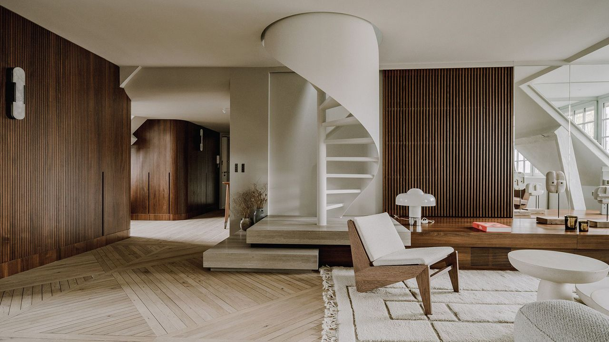
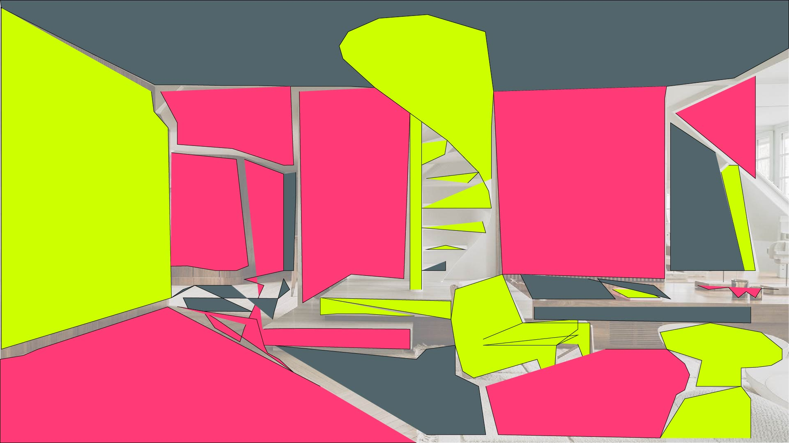

I created this image by using the pen tool and the color block tool to add a green, pink, and blue color triad. I started off by making four layers: the reference, the middleground, the background, and the foreground. I lowered the opacity on all the layers to see the new colors more clearly. I retained the three dimensionallity by altering dark and light shades. I used this luxury home because it looked like there were clear places to color block, and I added bright colors to contrast how bare it was before.